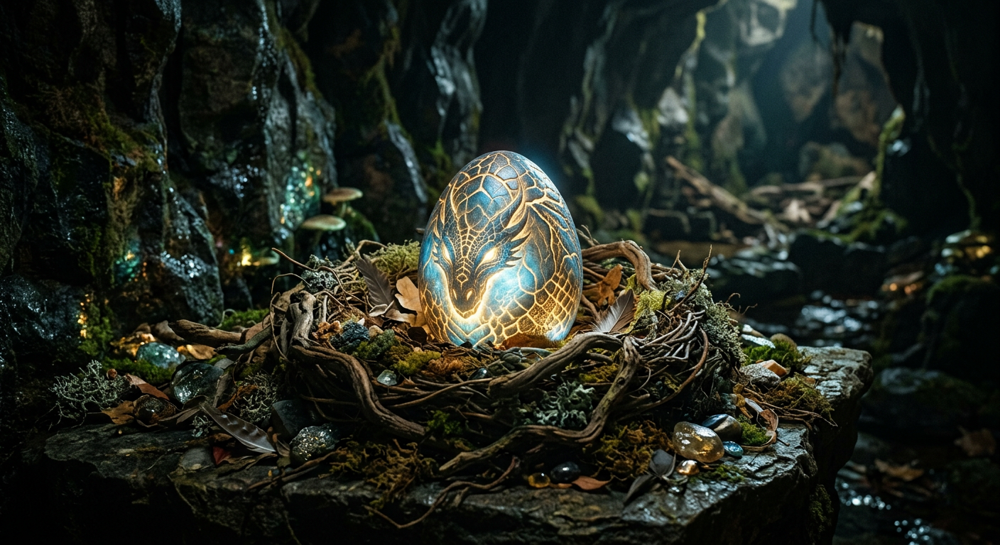
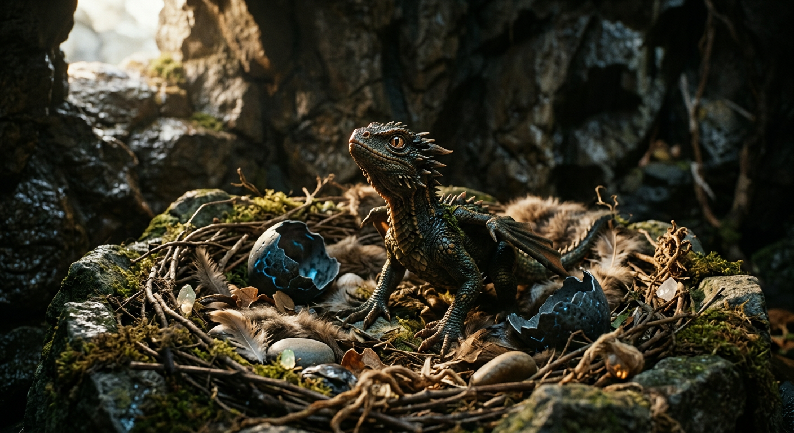
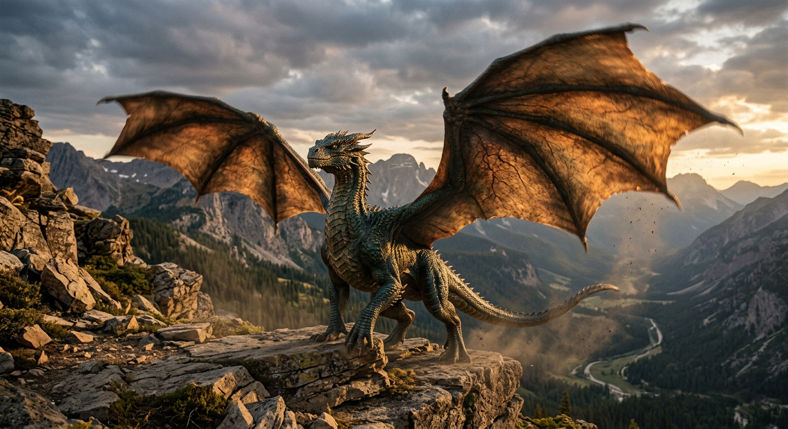
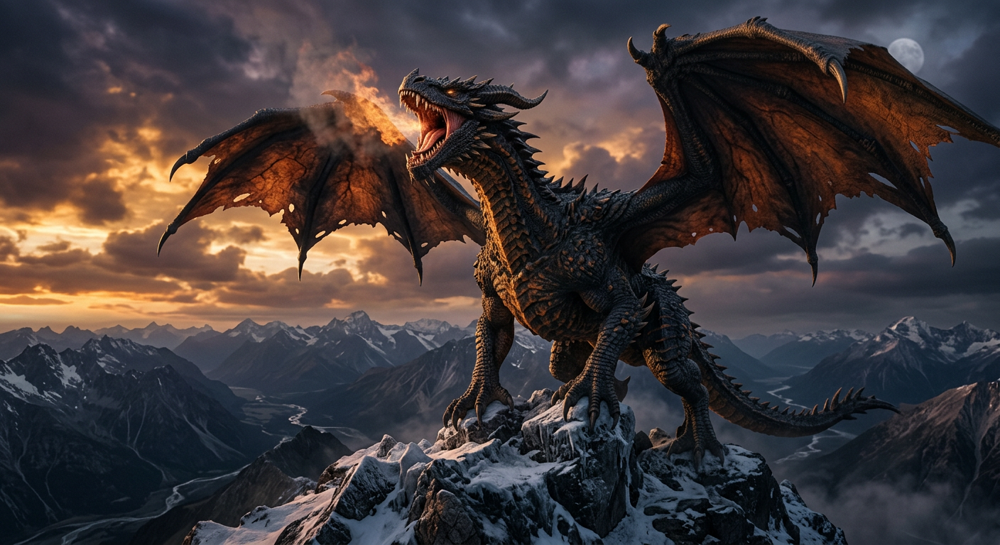

I. The Egg
In silence, potential gathers. The shell looks still, but inside it, fire learns its first heartbeat.

In silence, potential gathers. The shell looks still, but inside it, fire learns its first heartbeat.

Small, uncertain, alive—its first breath is both fear and wonder. Curiosity becomes the first form of courage.

Power arrives in pieces: scar by scar, flight by failed flight. Discipline turns raw fire into direction.

At last, the storm has a name. What began as fragile light now commands the horizon.